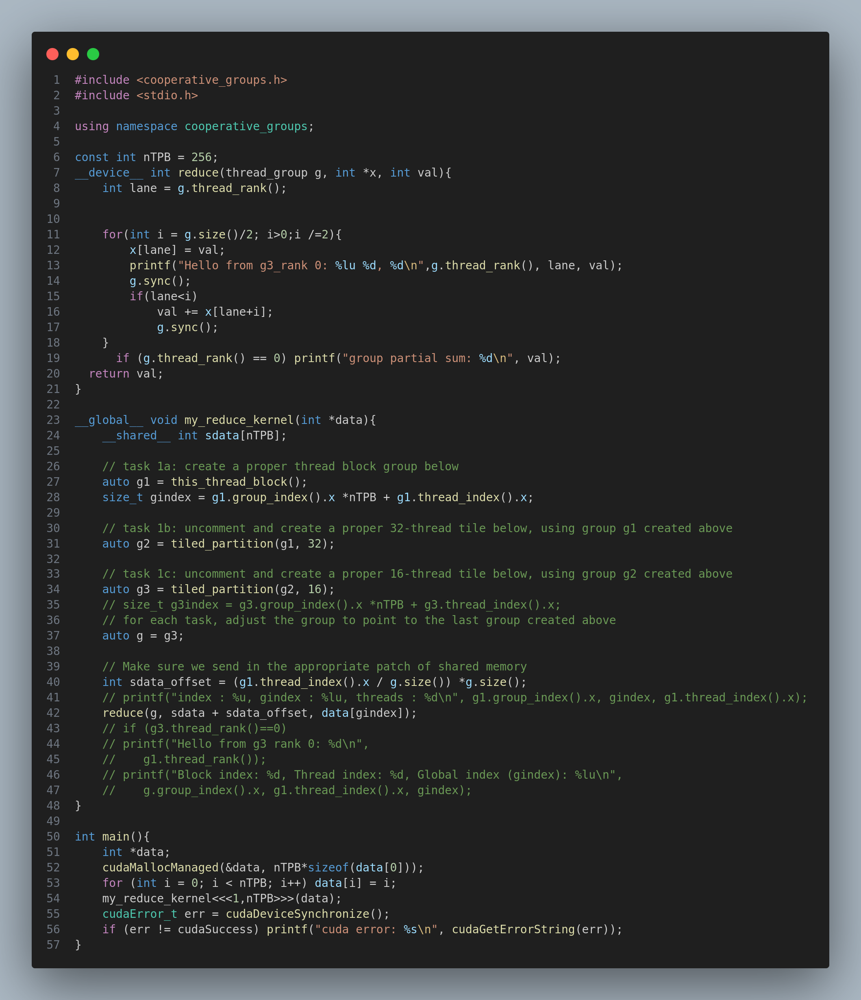
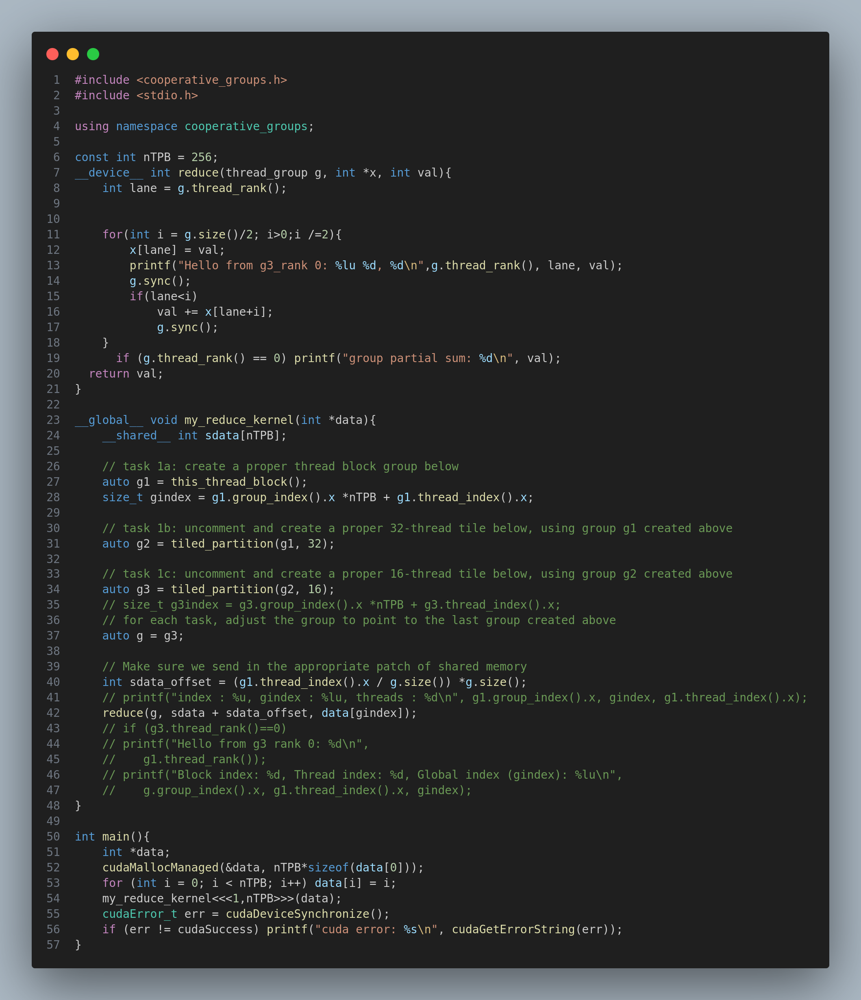

Learning CUDA
1. CUDA Programming Model
Figure 1: The methods of calculating id
You should know the following concepts:
-
GridIdx: The unique index of a grid that identifies
which grid is currently executing. It is calculated as:
gridIdx.x + gridDim.x * gridIdx.y(for 2D grids). -
GridDim: Represents the total number of blocks in the
grid. It can be accessed via
gridDim.xandgridDim.y. - blockIdx: The unique index of the block within the grid, used to identify which block is executing.
-
blockDim: The dimensions of each block, providing the
number of threads in each block. Accessed via
blockDim.xandblockDim.y. - ThreadIdx: The unique index of the thread within its block. It is used to identify which thread is executing within the block.
Memory Management
1. cudaMalloc
cudaMalloc allocates memory on the GPU (device). This is
the first step to store data on the device before performing
computations.
cudaError_t cudaMalloc(void **devPtr, size_t size);Parameters:
- devPtr: Pointer to the allocated memory on the device.
- size: The size of the allocated memory (in bytes).
2. cudaMemset
cudaMemset initializes or sets memory on the device to a
specific value. It is typically used to initialize device memory to zero
or another byte-level value.
cudaError_t cudaMemset(void *devPtr, int value, size_t count);Parameters:
- devPtr: Pointer to the device memory.
- value: The value to set in memory (usually 0).
- count: Number of bytes to set.
3. cudaMemcpy
cudaMemcpy copies data between the host (CPU) and device
(GPU). It can also be used for copying data between different memory
regions within the GPU.
cudaError_t cudaMemcpy(void *dst, const void *src, size_t count, cudaMemcpyKind kind);Parameters:
- dst: Destination pointer (host or device).
- src: Source pointer (host or device).
- count: Number of bytes to copy.
-
kind: The direction of the copy:
cudaMemcpyHostToDevicecudaMemcpyDeviceToHostcudaMemcpyDeviceToDevicecudaMemcpyHostToHost
4. cudaFree
cudaFree releases or deallocates memory previously
allocated on the GPU with cudaMalloc.
cudaError_t cudaFree(void *devPtr);Parameters:
- devPtr: Pointer to the memory to be freed on the device.
5. cudaMallocManaged
cudaMallocManaged allocates unified memory that
can be accessed by both the host and device without explicit copying.
This simplifies memory management, as data can be transparently
transferred between CPU and GPU.
cudaError_t cudaMallocManaged(void **devPtr, size_t size);Parameters:
- devPtr: Pointer to the allocated unified memory.
- size: The size of the allocated memory.
6. cudaMemPrefetchAsync
cudaMemPrefetchAsync prefetches memory to a specified
device asynchronously. It's used for managing the placement of managed
memory, ensuring that the data is available on the desired device (CPU
or GPU).
cudaError_t cudaMemPrefetchAsync(void *devPtr, size_t count, int device, cudaStream_t stream);Parameters:
- devPtr: Pointer to the managed memory.
- count: Number of bytes to prefetch.
- device: The device to prefetch to (0 for host, device ID for GPU).
- stream: The CUDA stream for asynchronous execution (can be 0 for default stream).
7. cudaDeviceSynchronize
cudaDeviceSynchronize waits for the device to complete all
preceding tasks. This is commonly used after launching kernels or memory
operations to ensure that the device is idle before proceeding.
cudaError_t cudaDeviceSynchronize(void);8.cudaHostAlloc
cudaHostAlloc ( void** pHost, size_t size, unsigned int flags )
Allocates page-locked memory on the host.
Performance Analysis
NVIDIA Nsight Systems
nsys profile --stats=true ./ex#generate a analysis report
nsys-ui open ui to see the details of reportNVIDIA Nsight Compute
ncu --metrics "metric_name" ./your_cuda_application ncu-uiCooperative Groups
 

协作组的引入简化了并行编程的复杂性，提供了更灵活和高效的线程同步与协调机制，特别适用于需要不同规模的线程组共同完成任务的场景。
协作组的常见操作
cooperative_groups::this_thread_block()#返回当前线程块的协作组
cooperative_groups::thread_group::split()#将线程块进一步划分为多个线程子组
group.sync()#对协作组内的线程进行同步cooperative_groups::grid_group#用于管理网格范围的协作，支持跨越多个线程块的同步操作。